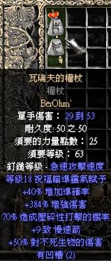
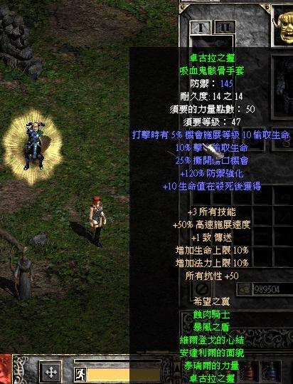
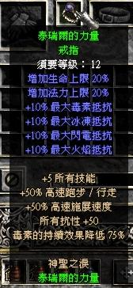
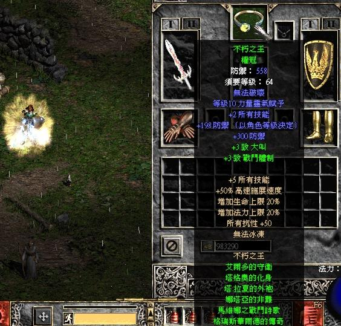
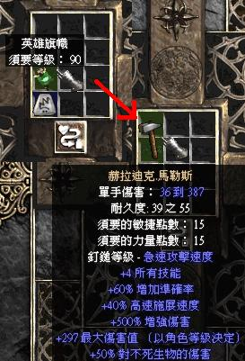
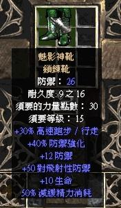
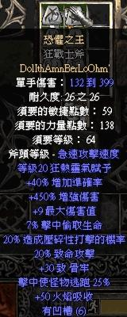
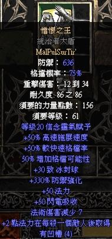
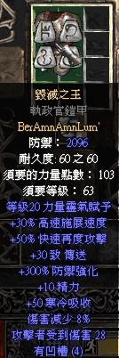
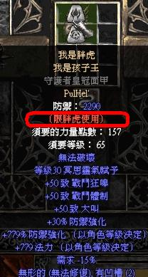

單機版高階修改教學
此教學須運用 MPQMaster D2 MPQ提取檔案 D2Excel D2 MPQ修改檔案 AFJ tbl Edit D2 TBL修改器
| 如何自製新符文組 | 如何自製新的套裝 | 如何自製新的方塊公式 |
| 如何新增物品名稱 |
1.如何自製新符文組
用Master提取patch_d2.mpq
然後選擇data/global/excel
對右方的Runes.txt按滑鼠右鍵
選擇Extract將他提取出來
然後 用Excel開啟它(讀取txt檔)
按滑鼠右鍵選擇AddRow增加新的一欄
在最新的一欄也就是編號170的地方
Name中鍵入名稱(範例使用Warriv's Warder 瓦瑞夫的權杖)
接著在complete(第3個選項)中輸入1讓該公式生效
然後在itype(第5個選項)中輸入scep使類型1變為權杖
接著在Rune1-6中鍵入需要的符文
由於材料為權杖的緣故 範例採用貝與歐姆2入生效
因此請在Rune1.Rune2中分別輸入r30.r27
請在T1Code1中鍵入屬性1(範例採用dmg% 也就是增加傷害%)
接著在T1Min1與T1Max1中輸入變動值(範例採用300與350 也就是增加傷害300-350%)
在來請在屬性2(T1Code2)中輸入crush(壓碎)
變動值(T1Min2與T1Max2)中分別輸入50-70
符文組效果會與符文無關
因此總變動值為350-400ed 壓碎70-90
效果3能用一般常用的ias(增加武器速度)
也就是T1Code3 -> swing2
變動值T1Min3與T1Max3 -> 40 - 40 (固定40%不變動)
類型4能採用熱門的靈氣賦予
也就是T1Min4 -> aura
要記得輸入備註T1Param4 -> Blessed Aim (範例為祝福瞄準)
變動值T1Min4與T1Max4 -> 15-18
類型5就是人人都愛的增加技能
T1Min5 -> oskill
記得備註T1Param5 ->
Slow Missiles (範例為慢速箭)
變動值T1Min5與T1Max5 -> 9-9
其餘的 可以喜好添加
比較熱門的 就這些了
接著儲存(save txt)覆蓋即可
你可以下載我的模組後重置
重置方法:只需將C:\Program Files\Diablo II\data\global\excel內中的資料全部刪除
即變回最初始的暗黑 然後放入你修改的檔案(Runes.txt)即可
成果如下

2.如何自製新的套裝
為了大眾提取方便
範例採用最普遍的"西剛的全套刀劍"
請先開啟修改套裝大綱
用Master提取patch_d2.mpq
然後選擇data/global/excel
對右方的Sets.txt按滑鼠右鍵
選擇Extract將他提取出來
然後 用Excel開啟它(讀取txt檔)
找到編號10Sigon's Complete Steel
請他她的名稱(index和name)修正為Runeword164(預設為希望之翼)
在PCode2a之後的則是套裝加成
上方
1範例中 已有詳細說明請玩家自行發揮
範例中就不加詳解了
PCode2a -> hp% / PMin2a -> 10 / PMax2a -> 10 (2套裝加成10%生命)
PCode3a -> mana% / PMin3a -> 10 / PMax3a -> 10 (3套裝加成10%法力)
PCode4a -> cast2 / PMin4a -> 50 / PMax4a -> 50 (4套裝加成50%高速施展)
PCode5a -> oskill / PParam5a -> Teleport / PMin5a -> 1 / PMax5a -> 1 (5套裝加成+1傳送技能)
FCode1 -> state / FParam1 -> fullsetgeneric / FMin1 -> 1 / FMax1 -> 1 (全套裝加成1 靈氣展現)
FCode2 -> res-all / FMin2 -> 50 / FMax2 -> 50 (全套裝加成2 所有抗性+50)
FCode3 -> allskills / FMin3 -> 3 / FMax3 -> 3 (全套裝加成2 所有技能+3)
接著儲存(save txt)覆蓋即可
你可以下載我的模組後重置
重置方法:只需將C:\Program Files\Diablo II\data\global\excel內中的資料全部刪除
即變回最初始的暗黑 然後放入你修改的檔案(Sets.txt)即可
完成編輯大綱在來 要編輯套裝物品
用Master提取patch_d2.mpq
然後選擇data/global/excel
對右方的SetItems.txt按滑鼠右鍵
選擇Extract將他提取出來
然後 用Excel開啟它(讀取txt檔)
找到編號36-41後 將他們的set統一修改為Runeword164(將編號36-41都歸類在希望之翼下)
再來 將36-41的index修改為你要的名稱
範例預設為 暴風之盾 / 泰瑞爾的力量 / 安達利爾的面貌 /
維爾登戈的心結 / 卓古拉之握 / 蝕肉騎士也就是Stormshield / Tyrael's Might / Andariel's Visage / Verdugo's Hearty Cord / Dracul's Grasp / Gorerider
由於修改過的裝備
需要新打到才會生效
因此 建議玩家直接用修改器修改
當然 你可以進行更多元化的修改
例如將蝕肉改成武器 將全部的名稱都變新的
或是多更多的成套加成與套裝加成
甚至超過6件裝備的成套裝備
這邊就讓玩家自行去發揮了
最後別忘了儲存(save txt)
然後覆蓋上去
你可以下載我的模組後重置
重置方法:只需將C:\Program Files\Diablo II\data\global\excel內中的資料全部刪除
即變回最初始的暗黑 然後放入你修改的檔案(SetItems.txt)即可
以下附上成品圖
 

用Master提取patch_d2.mpq
然後選擇data/global/excel
對右方的cubemain.txt按滑鼠右鍵
選擇Extract將他提取出來
然後 用Excel開啟它(讀取txt檔)
新增新公式(點右鍵選Add Row)
找到剛新增的編到153
enabled -> 1 (開啟讓該公式生效)
numinputs -> 2 (預設為2樣物件合成)
input 1 -> r33 (物件1 薩德)
input 2 -> std (物件2 英雄旗幟)
output -> hdm (生成物品 赫拉迪克.馬勒斯)
mod 1 -> dmg% / mod 1 min -> 500 / mod 1 max ->500 (追加屬性1 +500ed)
mod 2 -> allskills / mod 2 min -> 3 / mod 2 max ->5 (追加屬性2 +3-5全技能)
mod 3 -> swing2 / mod 3 min -> 60 / mod 3 max ->60 (追加屬性3 +60%武器速度)
mod 4 -> cast2 / mod 4 min -> 40 / mod 4 max ->40 (追加屬性4 +40%高速施展)
mod 5 -> dmg/lvl / mod 5 param -> 24 (追加屬性5 +大傷依等級乘3)
以下不再追加 只是範例
你也可以進行更多元化的修改
儲存(save txt)
然後覆蓋上去
你可以下載我的模組後重置
重置方法:只需將C:\Program Files\Diablo II\data\global\excel內中的資料全部刪除
即變回最初始的暗黑 然後放入你修改的檔案(cubemain.txt)即可

4.如何新增物品名稱
用Master提取patch_d2.mpq
然後選擇data/local/LNG/CHI/
對右方的patchstring.tbl按滑鼠右鍵
選擇Extract將他提取出來
然後 用AFJ tbl Edit開啟它
按一下功能表的+ 名稱鍵入NEW001
然後右方輸入你要的名子(範例為魅影神靴)
儲存放入C:\Program Files\Diablo II\data/local/LNG/CHI/
你可以下載我的模組後直接放入
記得在data中新增local/LNG/CHI 然後放入CHI內
用Extract提取UniqueItems.txt
為了方便提取 我用修改的方式
找到編號110將他的index修改為NEW001
UniqueItems.txt記得蓋上
你可以改屬性 套裝 甚至顏色等等
這邊就讓玩家自行發揮了
成品圖

無聊自創修改
|
 以暗黑(D.I.A.B.L.O) 為主的符文組 |
 以莫菲(M.P.S.T) 為主的符文組 |
 以巴爾(B.A.A.L) 為主的符文組 |
但是 最強的終究還是.....
